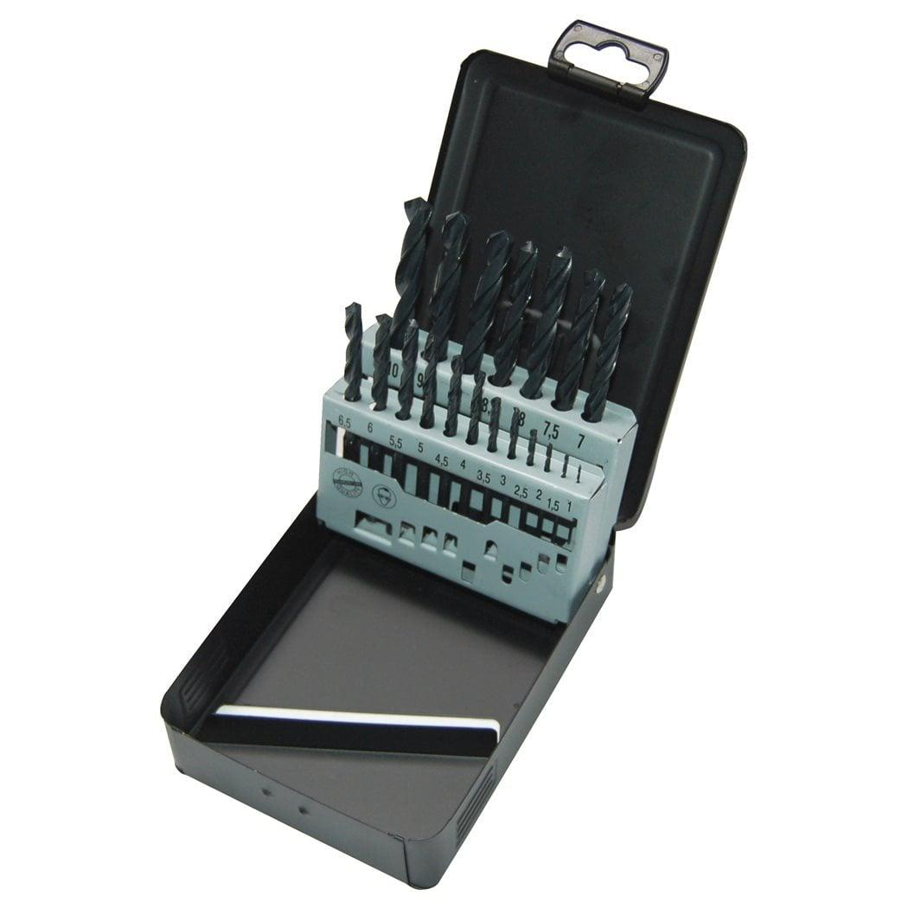

<h1>Milwaukee | HSSR Set - 19 pcs Metal HSS Rollforged Set</h1><p>4932352468</p><div style="display:flex;flex-wrap:wrap;gap:8px"></div><h4>Features</h4><ul><li>High speed steel rollforged metal drill bits produced according to DIN 338.</li><li>Oxide coating enables quick swarf removal.</li><li>Normal point shaped cutting tip with 118° angle.</li><li>Type N flute normal angle.</li><li>Suitable for drilling in steel, cast iron, alloyed and non-alloyed material up to 800 N/mm².</li><li>Colour: black.</li></ul><h4>Information</h4><table><tr><td>Contents</td><td>⌀ 1 / 1.5 / 2 / 2.5 / 3 / 3.5 / 4 / 4.5 / 5 / 5.5 / 6 / 6.5 / 7 / 7.5 / 8 / 8.5 / 9 / 9.5 / 10 mm</td></tr><tr><td>Pack quantity</td><td>19</td></tr><tr><td>Supplied in</td><td>Metal case</td></tr></table><h4>Weight</h4><table><tr><td>WEB_You tube Milwaukee 1x1 Product Clip</td><td>nE9KpBsn0FQ</td></tr></table>